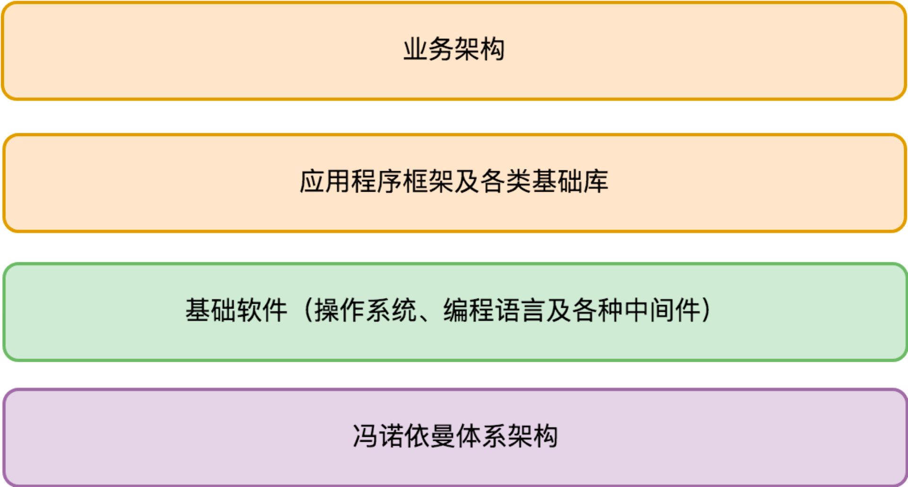

- 00 开篇词 怎样成长为优秀的软件架构师？.md.html
- 01 架构设计的宏观视角.md.html
- 02 大厦基石：无生有，有生万物.md.html
- 03 汇编：编程语言的诞生.md.html
- 04 编程语言的进化.md.html
- 05 思考题解读：如何实现可自我迭代的计算机？.md.html
- 06 操作系统进场.md.html
- 07 软件运行机制及内存管理.md.html
- 08 操作系统内核与编程接口.md.html
- 09 外存管理与文件系统.md.html
- 10 输入和输出设备：交互的演进.md.html
- 11 多任务：进程、线程与协程.md.html
- 12 进程内协同：同步、互斥与通讯.md.html
- 13 进程间的同步互斥、资源共享与通讯.md.html
- 14 IP 网络：连接世界的桥梁.md.html
- 15 可编程的互联网世界.md.html
- 16 安全管理：数字世界的守护.md.html
- 17 架构：需求分析 (上).md.html
- 18 架构：需求分析 (下) · 实战案例.md.html
- 19 基础平台篇：回顾与总结.md.html
- 20 桌面开发的宏观视角.md.html
- 21 图形界面程序的框架.md.html
- 22 桌面程序的架构建议.md.html
- 23 Web开发：浏览器、小程序与PWA.md.html
- 24 跨平台与 Web 开发的建议.md.html
- 25 桌面开发的未来.md.html
- 26 实战（一）：怎么设计一个“画图”程序？.md.html
- 27 实战（二）：怎么设计一个“画图”程序？.md.html
- 28 实战（三）：怎么设计一个“画图”程序？.md.html
- 29 实战（四）：怎么设计一个“画图”程序？.md.html
- 30 实战（五）：怎么设计一个“画图”程序？.md.html
- 31 辅助界面元素的架构设计.md.html
- 32 架构：系统的概要设计.md.html
- 33 桌面开发篇：回顾与总结.md.html
- 34 服务端开发的宏观视角.md.html
- 35 流量调度与负载均衡.md.html
- 36 业务状态与存储中间件.md.html
- 37 键值存储与数据库.md.html
- 38 文件系统与对象存储.md.html
- 39 存储与缓存.md.html
- 40 服务端的业务架构建议.md.html
- 41 实战（一）：“画图”程序后端实战.md.html
- 42 实战（二）：“画图”程序后端实战.md.html
- 43 实战（三）：“画图”程序后端实战.md.html
- 44 实战（四）：“画图”程序后端实战.md.html
- 45 架构：怎么做详细设计？.md.html
- 46 服务端开发篇：回顾与总结.md.html
- 47 服务治理的宏观视角.md.html
- 48 事务与工程：什么是工程师思维？.md.html
- 49 发布、升级与版本管理.md.html
- 50 日志、监控与报警.md.html
- 51 故障域与故障预案.md.html
- 52 故障排查与根因分析.md.html
- 53 过载保护与容量规划.md.html
- 54 业务的可支持性与持续运营.md.html
- 55 云计算、容器革命与服务端的未来.md.html
- 56 服务治理篇：回顾与总结.md.html
- 57 心性：架构师的修炼之道.md.html
- 58 如何判断架构设计的优劣？.md.html
- 59 少谈点框架，多谈点业务.md.html
- 60 架构分解：边界，不断重新审视边界.md.html
- 61 全局性功能的架构设计.md.html
- 62 重新认识开闭原则 (OCP).md.html
- 63 接口设计的准则.md.html
- 64 不断完善的架构范式.md.html
- 65 架构范式：文本处理.md.html
- 66 架构老化与重构.md.html
- 67 架构思维篇：回顾与总结.md.html
- 68 软件工程的宏观视角.md.html
- 69 团队的共识管理.md.html
- 70 怎么写设计文档？.md.html
- 71 如何阅读别人的代码？.md.html
- 72 发布单元与版本管理.md.html
- 73 软件质量管理：单元测试、持续构建与发布.md.html
- 74 开源、云服务与外包管理.md.html
- 75 软件版本迭代的规划.md.html
- 76 软件工程的未来.md.html
- 77 软件工程篇：回顾与总结.md.html
- 加餐 如何做HTTP服务的测试？.md.html
- 加餐 实战：“画图程序” 的整体架构.md.html
- 加餐 怎么保障发布的效率与质量？.md.html
- 热点观察 我看Facebook发币（上）：区块链、比特币与Libra币.md.html
- 热点观察 我看Facebook发币（下）：深入浅出理解 Libra 币.md.html
- 用户故事 站在更高的视角看架构.md.html
- 答疑解惑 想当架构师，我需要成为“全才”吗？.md.html
- 结束语 放下技术人的身段，用极限思维提升架构能力.md.html
- 课外阅读 从《孙子兵法》看底层的自然法则.md.html
- 捐赠
04 编程语言的进化
你好，我是七牛云许式伟。今天我们继续来聊聊编程语言。
编程语言的出现，诞生了软件工程师（也叫程序员）这样一个职业，而汇编语言则可以看做是软件工程师这个分工出现的标志。
通过编程语言，软件工程师和计算机可以进行交互，表达自己的思想。但是，如果我们把掌握编程语言看做是软件工程师的专业技能，其实又低估了编程语言带来的革命性变化。
编程语言在信息科技发展中的位置，如同人类文明中语言所在的位置。而编程语言写出来的软件（及其源代码），如同人类文明中不断被传承下来的图书典籍。
软件是活的书籍
我个人一直有一个观点：软件是活的书籍，是我们人类知识传承能力的一次伟大进化。书籍能够通过文字来记载事件、传递情感、揭示规律、传承技术。书籍能够让人们进行远程的沟通（飞鸽传书），也能够让我们了解古人的生活习性，与古人沟通（虽然是单向的）。
这些事情软件都可以做到，而且做得更好。为什么我说软件是活的书籍，有两方面的原因。
其一，表达方式的多样性。 书籍只能通过文字描述来进行表达，这种表达方式依赖于人们对文字的理解，以及人的想象能力对场景进行还原。软件除了能够通过文字，还能够通过超链接、声音、动画、视频、实时的交互反馈等方式来还原场景。
其二，对技术的现场还原。 书籍只能通过文字来描述技术，但是因为人与人对同样的文字理解不同，领悟能力不同，这些都可能导致技术的传承会出现偏差，如果文字的记载不够详尽，可能就会出现“谁也看不懂，学不会”的情况，从而导致技术的失传。
但是，软件对技术的还原可以是精确的，甚至软件本身可以是技术的一部分。当软件是技术的一部分的时候，技术传承就是精确的，失传的概率就大大降低（除非技术本身适应不了潮流，退出了历史舞台）。
信息科技发展到今天，已经影响人类活动的方方面面。无论你从事什么职业，不管你是否会从事软件开发的工作，你都无法和信息科技脱节。如果希望能够站在职业发展的至高点，你就需要理解和计算机沟通的语言，也就需要理解软件工程师们的语言。
不仅如此，如果你把编程语言升华为人类知识传承能力的进化，你就更能够清晰地预判到这样的未来：每一个小孩的基础教育中一定会有编程教育，就如同每一个小孩都需要学习物理和数学一样。
编程范式的进化
编程语言从汇编开始，到今天还只有六十多年的历史，但是迭代之迅速，远超自然语言的迭代速度。从思想表达的角度来说，我们通常会听到以下这些编程范式。
其一是过程式。过程式就是以一条条命令的方式，让计算机按我们的意愿来执行。 今天计算机的机器语言本身就是一条条指令构成，本身也是过程式的。所以过程式最为常见，每个语言都有一定过程式的影子。过程式语言的代表是 Fortran、C/C++、JavaScript、Go 等等。
过程式编程中最核心的两个概念是结构体（自定义的类型）和过程（也叫函数）。通过结构体对数据进行组合，可以构建出任意复杂的自定义数据结构。通过过程可以抽象出任意复杂的自定义指令，复用以前的成果，简化意图的表达。
其二是函数式。函数式本质上是过程式编程的一种约束，它最核心的主张就是变量不可变，函数尽可能没有副作用（对于通用语言来说，所有函数都没副作用是不可能的，内部有 IO 行为的函数就有副作用）。
既然变量不可变，函数没有副作用，自然人们犯错的机会也就更少，代码质量就会更高。函数式语言的代表是 Haskell、Erlang 等等。大部分语言会比较难以彻底实施函数式的编程思想，但在思想上会有所借鉴。
函数式编程相对小众。因为这样写代码质量虽然高，但是学习门槛也高。举一个最简单的例子：在过程式编程中，数组是一个最常规的数据结构，但是在函数式中因为变量不可变，对某个下标的数组元素的修改，就需要复制整个数组（因为数组作为一个变量它不可变），非常低效。
所以，函数式编程里面，需要通过一种复杂的平衡二叉树来实现一个使用界面（接口）上和过程式语言数组一致的“数组”。这个简单的例子表明，如果你想用函数式编程，你需要重修数据结构这门课程，大学里面学的数据结构是不顶用了。
其三是面向对象。面向对象在过程式的基础上，引入了对象（类）和对象方法（类成员函数），它主张尽可能把方法（其实就是过程）归纳到合适的对象（类）上，不主张全局函数（过程）。面向对象语言的代表是 Java、C#、C++、Go 等等。
从“面向对象”到“面向连接”
面向对象的核心思想是引入契约，基于对象这样一个概念对代码的使用界面进行抽象和封装。
它有两个显著的优点。
其一是清晰的使用界面，某种类型的对象有哪些方法一目了然，而不像过程式编程，数据结构和过程的关系是非常松散的。
其二是信息的封装。 面向对象不主张绕过对象的使用接口侵入到对象的内部实现细节。因为这样做破坏了信息的封装，降低了类的可复用性，有一天对象的内部实现方式改变了，依赖该对象的相关代码也需要跟着调整。
面向对象还有一个至关重要的概念是接口。通过接口，我们可以优雅地实现过程式编程中很费劲才能做到的一个能力：多态。
由于对象和对象方法的强关联，我们可以引入接口来抽象不同对象相同的行为（比如鸟和猪是不同的对象，但是它们有相同的方法，比如移动和吃东西）。这样不同对象就可以用相同的代码来实现类似的复杂行为，这就是多态了。
多数面向对象语言往往还会引入一个叫继承的概念。大家对这个概念褒贬不一。虽然继承带来了编码上的便捷性，但也带来了不必要的心智负担：本来复合对象的唯一构造方法是组合，现在多了一个选择，继承。
究竟什么时候应该用继承，什么时候应该用组合？这着实会让人纠结。不过，这件事情最完美的答案是 Go 语言给出来的：放弃继承，全面强化组合能力（要了解 Go 语言强大的组合能力，参阅我的演讲）。
不同编程范式并不是互斥的。虽然有些编程语言会有明确的编程范式主张，比如 Java 是纯正的面向对象语言，它反对全局过程。但是，也有一些语言明确主张说自己是多范式的，典型代表是 C++。
当然，可能 C++ 不是一个好例子，因为它太复杂了，让人觉得多范式会大大增加语言的复杂性，虽然其实 C++ 的复杂性和多范式并没有什么关系。
可能 Go 语言是多范式更好的例子。它没有声称自己是多范式的，但是实际上每一种编程范式它都保留了精华部分。这并没有使得 Go 语言变得很复杂，整个语言的特性极其精简。
Go 语言之所以没有像 C++ 那样声称是多范式的，是因为 Go 官方认为 Go 是一门面向连接的语言。
什么是面向连接的语言？在此之前，你可能并没有听过这样的编程范式，这应该算 Go 自己发明出来的范式名称。在我看来，所谓面向连接就是朴素的组合思想。研究连接，就是研究人与人如何组合，研究代码与代码之间怎么组合。
面向对象创造性地把契约的重要性提高到了非常重要的高度，但这还远远不够。这是因为，并不是只有对象需要契约，语言设计的方方面面都需要契约。
比如，代码规范约束了人的行为，是人与人的连接契约。如果面对同一种语言，大家写代码的方式很不一样，语言就可能存在很多种方言，这对达成共识十分不利。所以 Go 语言直接从语言设计上就消灭掉那些最容易发生口水的地方，让大家专注于意图的表达。
再比如，消息传递约束了进程（这里的进程是抽象意义上的，在 Go 语言中叫 goroutine）的行为，是进程与进程的连接契约。** 消息传递是多核背景下流行起来的一种编程思想，其核心主张是：尽可能用消息传递来取代共享内存，从而尽可能避免显式的锁，降低编程负担。**
Go 语言不只是提供了语言内建的消息传递机制（channel），同时它的消息传递是类型安全的。这种类型安全的消息传递契约机制，大大降低了犯错的机会。
其他方面的进化
除了编程范式，编程语言的进化还体现在工程化能力的完善上。工程化能力主要体现在如下这些方面。
- 包（package），即代码的发布单元。
- 版本（version），即包的依赖管理。
- 文档生成（doc）。
- 单元测试（test）。
从语言的执行器的行为看，出现了这样三种分类的语言。
- 编译的目标文件为可执行程序。典型代表是 Fortran、C/C++、Go 等。
- 生成跨平台的虚拟机字节码，有独立的执行器（虚拟机）执行字节码 。典型代表为 Java、Erlang 等。
- 直接解释执行。典型代表是 JavaScript。当然现在纯解释执行的语言已经不多。大多数语言也只是看起来直接执行，内部还是会有基于字节码的虚拟机以提升性能。
语言对架构的影响是什么？
我们思考一个问题：从架构设计角度来看，编程语言的选择对架构的影响是什么？
我们在第一篇“架构设计的宏观视角”中，介绍了服务端程序和客户端程序的整体架构图。细心的读者可能留意到了，在架构图中我用了三种不同的颜色来表示不同层次的依赖。
无论服务端，还是客户端，我们可以统一将其架构图简化为下图所示。

图中淡紫色是硬件层次的依赖，是我们程序工作的物理基础。淡绿色的是软件层次的依赖，是我们程序工作的生态环境。桔色的是库或源代码层次的依赖，是我们程序本身的组成部分。细分的话它又可以分两部分：一部分是业务无关的框架和基础库，还有一部分是业务架构。
从软件的业务架构来说，本身应该怎么拆分模块，每个模块具体做什么样的事情（业务边界是什么），这是业务需求本身决定的，和编程语言并没有关系。但在我们描述每个模块的规格时，采用的规格描述语言会面临如下两种选择：
- 选择某种语言无关的接口表示；
- 选择团队开发时采用的语言来描述接口。
两种选择的差异并不是实质性的。只要团队内有共识，选哪一种都无所谓。本着“如无必要勿增实体”的原则，我个人会倾向于后者，用开发语言来做接口表示。在七牛云的话自然就是选 Go 了。
站在唯技术论的角度，业务架构与语言无关，影响的只是模块规格的描述语法。但语言的选择在实践中对业务架构决策的影响仍然极其关键。
原因之一是开发效率。 抛开语言本身的开发效率差异不谈，不同语言会有不同的社区资源。语言长期以来的演进，社区所沉淀下来的框架和基础库，还有你所在的企业长期发展形成的框架和基础库，都会导致巨大的开发效率上的差异。
原因之二是后期维护。 语言的历史通常都很悠久，很难实质性地消亡。但是语言的确有它的生命周期，语言也会走向衰落。选择公司现在更熟悉的语言，还是选择一个面向未来更优的语言，对架构师来说也是一个两难选择。
结语
今天我们抛开具体的语言发展史，而从编程范式演进的角度来谈编程语言的进化。过程式、函数式、面向对象，这些都是大家熟悉的编程范式；所以我们把重点放在了介绍由 Go 语言带来的面向连接的编程思想，并将其与面向对象做了详细的对比。
未来编程语言还将出现什么样的新思想，我们不得而知。但可以预见，出现新的创造性思维的挑战将越来越大。历史的发展是曲折螺旋上升的。
要想有所突破，需要建立批判性思维。一种新思潮的兴起过程很容易用力过猛。面向对象是一个很好的例子。面向对象是非常重要的进步，但是继承是一个过度设计，不只让软件工程师在组合与继承中纠结，也产生了复杂的对象继承树。我们只有在实践中不断总结与反思，才有可能产生新的突破。
你对今天的内容有什么思考与解读，欢迎给我留言，我们一起讨论。如果你觉得有所收获，也欢迎把文章分享给你的朋友。感谢你的收听，我们下期再见。
© 2019 - 2023 Liangliang Lee. Powered by gin and hexo-theme-book.